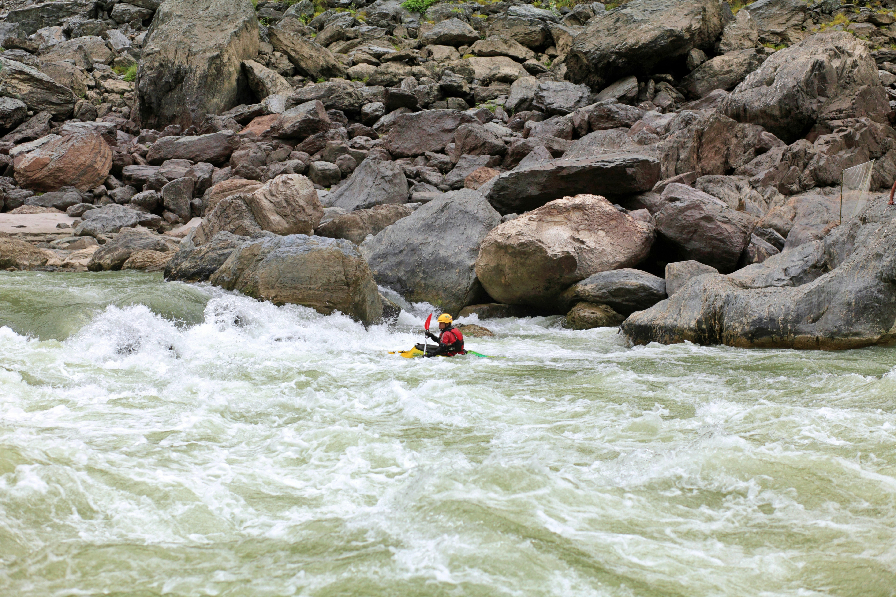
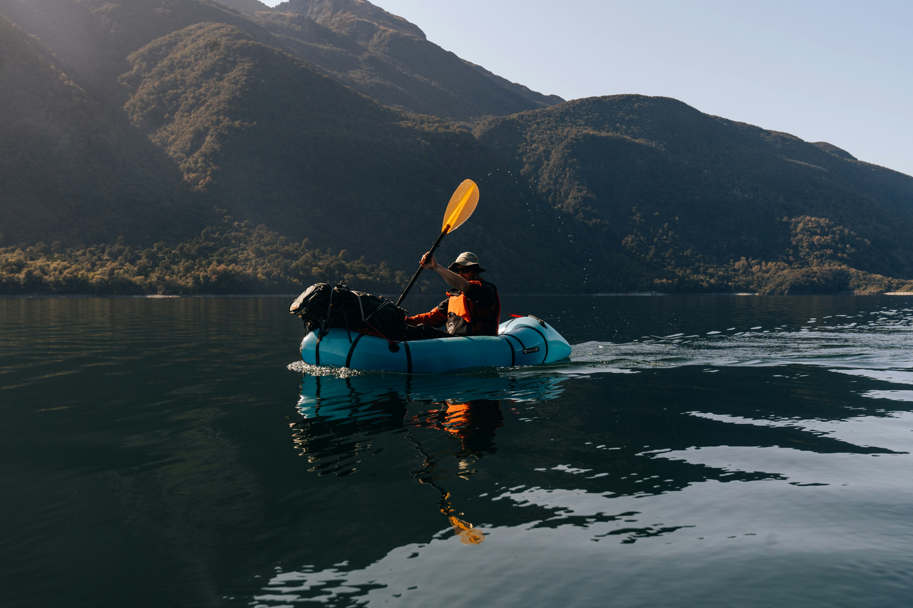

<!DOCTYPE html>
<html lang="en-US">
    <head>
        <meta charset="utf-8">
        <meta name="viewport" content="width=device-width, initial-scale=1">
        <title>Trips</title>
        <meta name="author" content="Taleena Woodruff">
        <meta name="description" content="all about Aqua Adventures various trips">
        <link href="styles/rafting.css" rel="stylesheet">
    </head>
</html>
<body>
    <header>
        
        <nav>
            <ul class="navigation">
                <li><a href="index.html">Home</a></li>
                <li><a href="about.html">About</a></li>
                <li><a href="trips.html">Trips</a></li>
                <li><a href="contact.html">Contact Us</a></li>
            </ul>
        </nav>
    </header>
    <main>
                <section>
                    <h2 class="hh">Trips!</h2>
                    <p class="hp">Trying to find the perfect trip? Look no further, CONTACT US. We have Three types of excursions for you!
                        You and a small group can book our group ride that has two lengths.
                        Our shorter easy ride with less white water.
                        Or our Die Hard excursion that goes through our easy course and rides longer to the heavyweight rapids!
                    </p>
                    <a href="contact.html"><button>BOOK NOW!</button></a>
                    <div class="trips">
                        <div class="column">
                            <section>
                                <h3>Deadly Pass</h3>
                                <h4>65.80 per Person</h4>
                                <p> The Deadly Pass course lasts roughly 4 hours!
                                    This one starts the same docking station as our easy course
                                    and follows it all the way through and about 3 miles after that as well.
                                    On this course you will reach rapids that are closer to 5-7 feet tall.
                                    We do not recommend taking inexperienced rafters on this course, and advice to use caution if bringing minors on the ride.
                                    Children under 12 are not allowed on this course.</p>
                                    
                            </section>
                            <section>
                                <h3>Die Hard</h3>
                                <h4>74.80 per Person</h4>
                                <p> The Die Hard course lasts roughly 3 hours!
                                    This one starts the same docking station as our easy course and follows it all the way through
                                    and about 3 miles after that as well. On this course you will reach rapids that are closer to 5-7 feet tall.
                                    We do not reccomend taking inexpeirenced rafters on this course, and advice to use caution if bringing minors on the ride.
                                    Children under 12 are not allowed on this course.</p>
                                    
                            </section>
                        </div>
                        <div class="column">
                            <section>
                                <h3>Easy Peasy</h3>
                                <h4>54.50 per Person (36.00 12 and under)</h4>
                                <p> This course is one easy ride with some great adrenaline.
                                    On average this trip lasts about 90 minutes coursing over 5 different medium size white water.
                                    This is perfect for when you have little kids or inexperienced rafters on the boat.
                                    You'll pass by several different natural sites that our instructors will point out.
                                    This ride is paid per person but discounts can be offered if you fill up an entire boat.
                                    Waivers need to be filled before check in and after reservation has been made.
                                    You can reserve spots as early as they are made open but must be booked 48 hours prior to rafting date.
                                    There is also a 48hr cancellation notice in effect for partial refund.</p>
                                
                            </section>
                        </div>
                    </div>
                        <h2 class="#">Times & Availability for All Trips</h2>
                    <div class="trips">
                    <div class="column">
                        <table>
                            <tr>
                              <th>Run</th>
                              <th>Time</th>
                              <th>Availability</th>
                            </tr>
                            <tr>
                              <td>Die Hard</td>
                              <td>8:00am - 11:00am</td>
                              <td>Open</td>
                            </tr>
                            <tr>
                              <td>Easy Peasy</td>
                              <td>10:00am - 11:30 am</td>
                              <td>Open</td>
                            </tr>
                            <tr>
                                <td>Easy Peasy</td>
                                <td>12:30pm - 2pm</td>
                                <td>Open</td>
                              </tr>
                            <tr>
                                <td>Easy Peasy</td>
                                <td>3:00pm - 4:30pm</td>
                                <td>Open</td>
                              </tr>
                            <tr>
                                <td>Die Hard</td>
                                <td>1:00pm - 4:00pm</td>
                                <td>Booked</td>
                              </tr>
                              <tr>
                                <td>Deadly Pass</td>
                                <td>8:00am - 12:00pm</td>
                                <td>Open</td>
                              </tr>
                            <tr>
                              <td>Deadly Pass</td>
                              <td>2:00pm - 6:00pm</td>
                              <td>Open</td>
                            </tr>
                          </table>
                          <a href="contact.html"><button>BOOK NOW!</button></a>
                    </div>
                    <div class="column">
                    <h4>Booking Information for Aqua Adventures</h4>
                    <p>
                        To ensure a seamless experience for all our guests, we kindly request that all bookings be made at least 48 hours in advance.
                        This allows us to prepare and maintain the highest standards of safety and enjoyment on every run.
                    </p>
                    <h4>Waitlist and Timing</h4>
                    <p>
                        If your desired time slot is fully booked, you can join our waitlist, and we'll notify you if a spot opens up.
                        Please arrive on time for your scheduled adventure to avoid any delays.
                        Punctuality ensures that we can stick to our schedule and everyone can enjoy their rafting experience as planned.
                    </p>
                    <h4>Breaks and Safety Inspections</h4>
                    <p>
                        Please note that there is a mandatory one-hour break between runs.
                        This time is dedicated to giving our team a well-deserved rest and conducting thorough daily safety inspections.
                        These checks are crucial to guarantee the safety and quality of our equipment and your overall experience.
                        Thank you for choosing Aqua Adventures.
                        We look forward to making your rafting experience unforgettable!
                    </p>
                    </div>
    </main>
    <footer>
        <p>©2024 | Aqua Adventures | Taleena Woodruff</p>
        <div class="link-container">
            <nav class="sociallinks">
            <a href="images/tripswireframe.png">
                
            </a>
            <a href="https://facebook.com">
                
            </a>
            <a href="https://twitter.com">
                
            </a>
            <a href="https://instagram.com">
                
            </a>
            </nav>
        </div>
    </footer>
</body>
</html>
